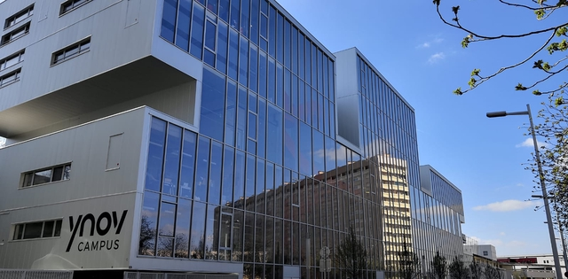

Fabien ARTHUR, étudiant informatique
In a Nutshell
Je suis un étudiant en informatique de 18 ans à l’école Ynov Campus suivant une formation de bachelor informatique
Ayant toujours été intéressé par le numérique et le domaine de l'informatique, je vous présente sur ce site les divers projets réaliser dans le cadre de ma formation.
Projets à l'affiche
DataTrack
Challenge 48h
48h. Le but ? Imaginer un projet répondant à un problème du monde digital sur le thème de la citoyenneté, par groupe de 5.
Projet ayant atteint la seconde place, sur 50 groupes

Portfolio Web
Dev Web
Ce site !
Fais dans le cadre d'un Ydays, c'est le résultat de l'acquisition de nouvelles compétences en développement web, avec l'html et le css.
Formation
Après un baccalauréat spécialité Numériques & Sciences Informatiques et Mathématiques, mention très bien au lycée Paul Lapie à Courbevoie, j'ai commencé à suivre une formation de bachelor informatique à Paris Ynov Campus, situé 12 rue Anatole France à Nanterre.
Cette école du numérique à pour particularité d'être très centré sur le travail collectif et la création de projets concrets, comme le montre ce portfolio. Site officiel Ynov

Cette école du numérique à pour particularité d'être très centré sur le travail collectif et la création de projets concrets, comme le montre ce portfolio. Site officiel Ynov
Ydays
Les Ydays sont une initiative d'Ynov réservant tous les mercredis pour des projets multi-filières, aboutissant en générale à deux projets variés en fin d'année.
Les étudiants en choisissent deux qu'ils feront tout au long de l'année, cela pouvant être la création d'une application, des concours de CTF, ou encore la création d'un langage de programmation ! (Ecla).
Site des Ydays
Les étudiants en choisissent deux qu'ils feront tout au long de l'année, cela pouvant être la création d'une application, des concours de CTF, ou encore la création d'un langage de programmation ! (Ecla).
Site des Ydays
Compétences
-
Langages ;
- - Go
- - Js/html/css
- - Java
- - ~ Python
-
Outils ;
- - Github
-
Divers ;
- - Basique de Linux
- - Réseaux / configuration basique Cisco
Contact
- Adresse : 17 Boulevard de la République
- Ville : La Garenne Colombes (92250), France
- Email : fabien.arthur@ynov.com
- Tel : 07 12 34 56 78 90